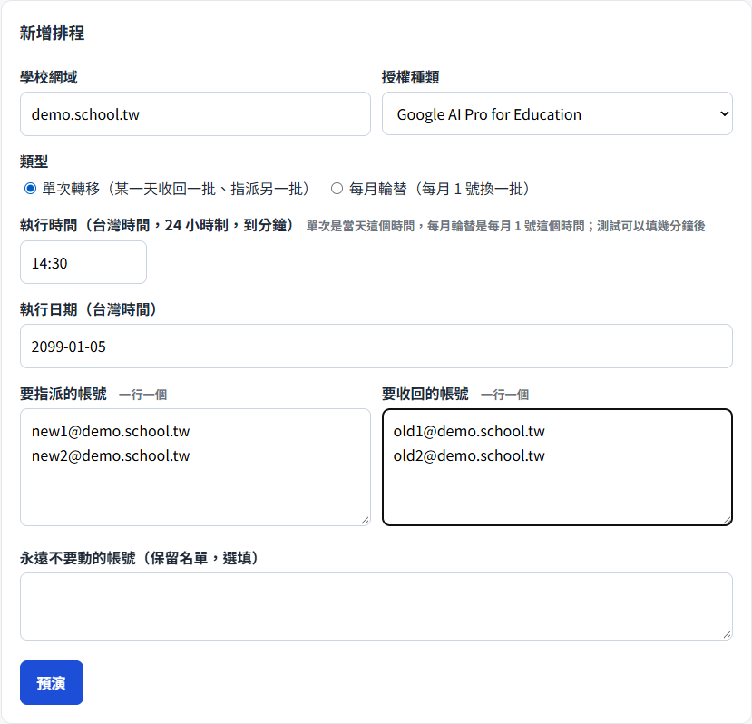
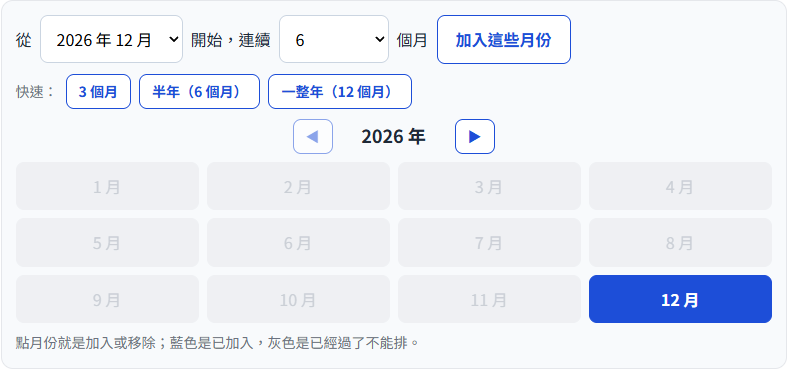
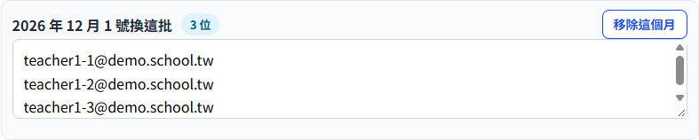
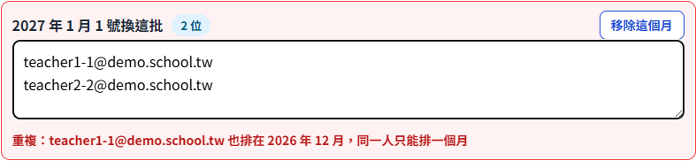
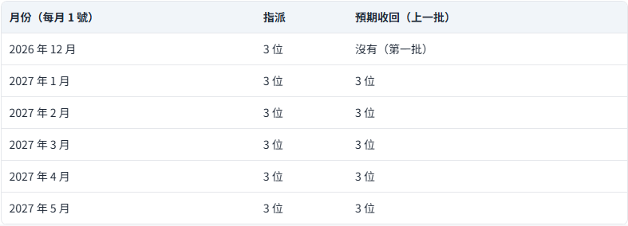

先排好日期和名單，時間到系統自己換授權，不用有人在電腦前。回排程頁
老師的 Google 授權（例如 Education Plus、Google AI Pro for Education）名額有限，常常要輪流給不同的人用。以前要有人記得在那天登入後台、一個一個改。排程把這件事交給系統：你先說「哪一天、幾點、收回誰、指派誰」，時間到就自動做，做完會通知鴻綸。
| 情境 | 用哪種 |
|---|---|
| 某一天，把一批人的授權換給另一批人 | 單次轉移 |
| 1 月給這 5 位、2 月換另外 5 位、3 月再換另外 5 位，每個月 1 號自動換，可以一次排一整年 | 每月輪替 |
2027-01-05）和執行時間（台灣時間，24 小時制，例如 14:30）。沒填時間就是凌晨 03:00。
每月輪替固定在「每月 1 號」的你指定的時間執行。到了某個月 1 號，系統做兩件事：那個月的人沒有授權就指派，其他月份的人如果還有授權就收回。所以你只要排好每個月是哪一批人，之後完全自動。
已經過了的月份是灰色，不能選。兩種方式可以混用，例如先選「一整年」，再把不需要的月份點掉。

每選一個月，下面就多一張卡片，標題是「2027 年 1 月 1 號換這批」，右上角顯示這批有幾位。把那個月要有授權的老師貼進去。移除有貼名單的月份時，系統會先問你。

如果同一位老師出現在兩個月，兩張卡片都會變紅，並寫出是誰、還排在哪個月，上方的總計也會提醒。修正之前，預演會被擋下。

預演不會改任何授權，只是讀學校「現在」的狀況，算出如果現在執行會做什麼。
| 顏色 | 意思 |
|---|---|
| 指派 | 這個人現在沒有授權，到時會給他 |
| 收回 | 這個人現在有授權，到時會收回 |
| 跳過 | 已經是想要的狀態，不用動 |
| 出錯 | 例如這個信箱在學校目錄裡找不到；有出錯就不能建立 |
每月輪替另外有一張「每月總覽」：每個月指派幾位、預期收回幾位（收回上一個月那批）。月份沒有人會用黃底標出，請確認是不是漏貼。

| 狀態 | 意思 | 要做什麼 |
|---|---|---|
| 待鴻綸核准 | 學校建立的，還沒生效 | 鴻綸按「核准」 |
| 排程中 | 正常等著到期 | 不用做什麼 |
| 已暫停 | 被暫停，不會執行 | 要執行就按「恢復」 |
| 已完成 | 做完了 | 可以刪除，或留著當紀錄 |
| 逾期未執行 | 到期後超過 3 天都沒做成，系統不再自動補跑 | 確認原因，重新排一筆 |
| 需要人處理 | 安全檢查沒過，整批沒有執行（沒有改任何授權） | 看最近一次的說明，修好名單後請鴻綸按「恢復」 |
暫時性的失敗（例如 Google 暫時連不上）系統會 10 分鐘後自動再試，不用處理。
| 保護 | 怎麼運作 |
|---|---|
| 先預演、先測試 | 新排程只預演；手動測試通過才能改成正式執行 |
| 同一時間不能互相打架 | 同一天同一個時間，同一人被兩筆排程往相反方向動，會擋下。同一天不同時間則依先後執行並提醒 |
| 同一人不能排兩個月 | 每月輪替會標紅並擋住預演 |
| 名單預期數檢查 | 執行時，實際要做的筆數必須和名單預期差不多（容許差至少 3 筆或 20%）。差太多就整批不執行，標「需要人處理」 |
| 筆數上限 | 單次預設最多 500 位，最高 3000 位 |
| 名額不夠時停手 | Google 回報名額不足就立刻停止，不會硬做；已經做完的不會回復，狀態會標「需要人處理」並通知鴻綸 |
| 保留名單 | 「永遠不要動的帳號」任何情況都不會被收回或指派 |
| 做完會驗證 | 寫完會等一下再重讀，確認授權真的換過去，不一致才算有問題 |
| 個資 | 名單在排程完成 30 天後清空，執行紀錄留 1 年，且信箱只顯示第一個字母和網域（例如 t***@school.edu.tw） |
先按「預演」。預演上方如果有紅字，照紅字修正（常見：信箱找不到、同一人排兩個月、跟別筆排程同一時間打架）。
執行時間要晚於現在（台灣時間）。想測試就填幾分鐘後。
信箱打錯，或那個帳號不在這個網域。老師換了帳號的話要用新的。
先看狀態：是不是還是「只預演」（沒改成正式執行）、是不是「已暫停」、是不是「需要人處理」。系統每分鐘檢查一次，所以最多晚一分鐘。
正常。每位老師約 2.7 秒，50 位大約要兩分鐘。等狀態變成「已完成」再看。
到期日起 3 天內會自動補跑，補跑後結果和準時執行一樣。超過 3 天標「逾期」，不會自動做，避免在你不知道的時候動授權。
還沒執行的排程可以按「暫停」或「刪除」。已經執行的，要再排一筆反向的排程（例如把剛指派的人收回）。